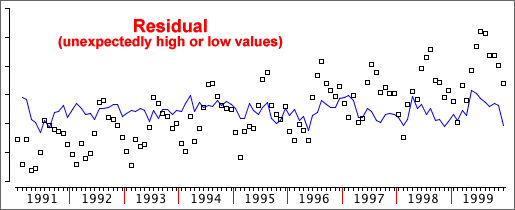

Four components of a time series
The variation in a time series can be split into four separate components:
Deseasonalised = Trend + Cyclical + Residual
(Of course, the seasonal effect is only present for seasonal data.)
